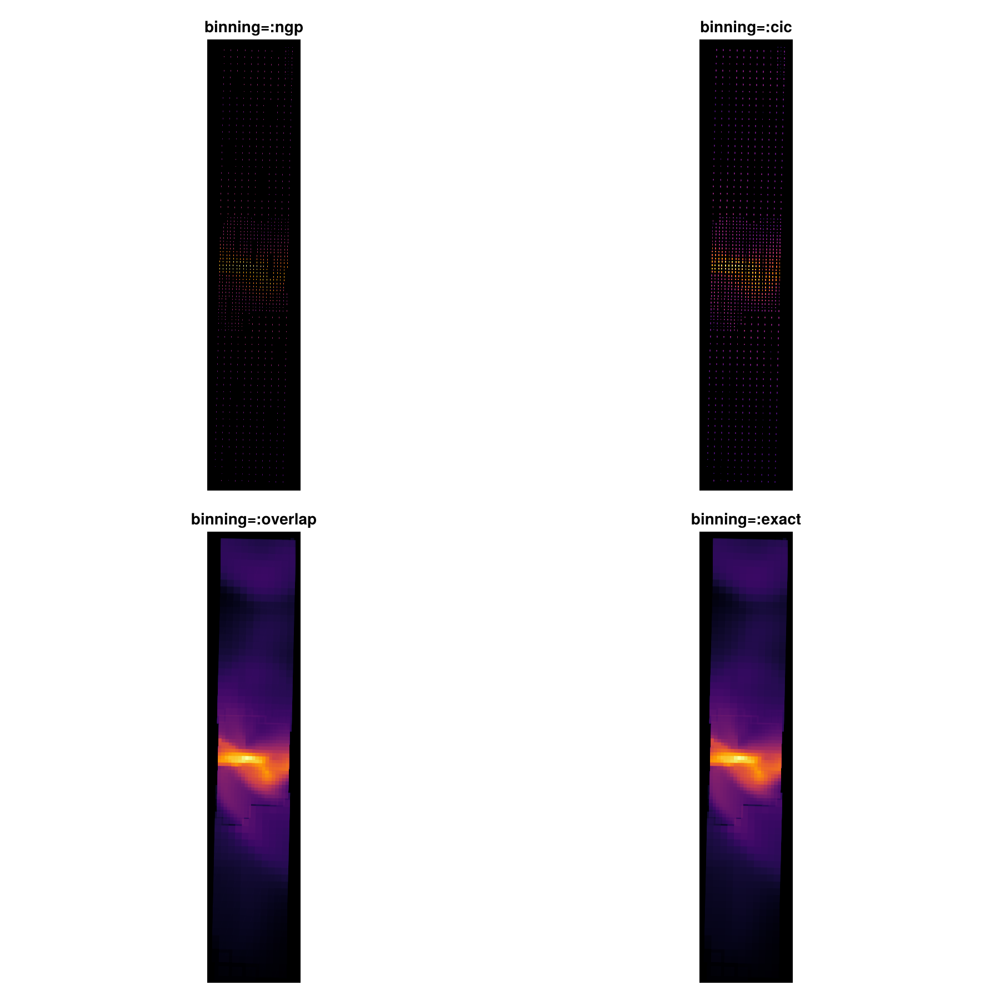
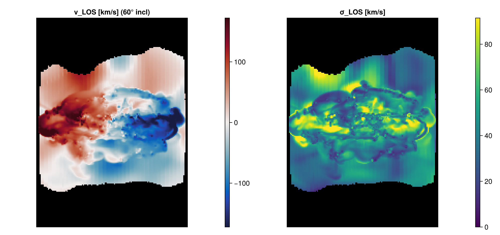
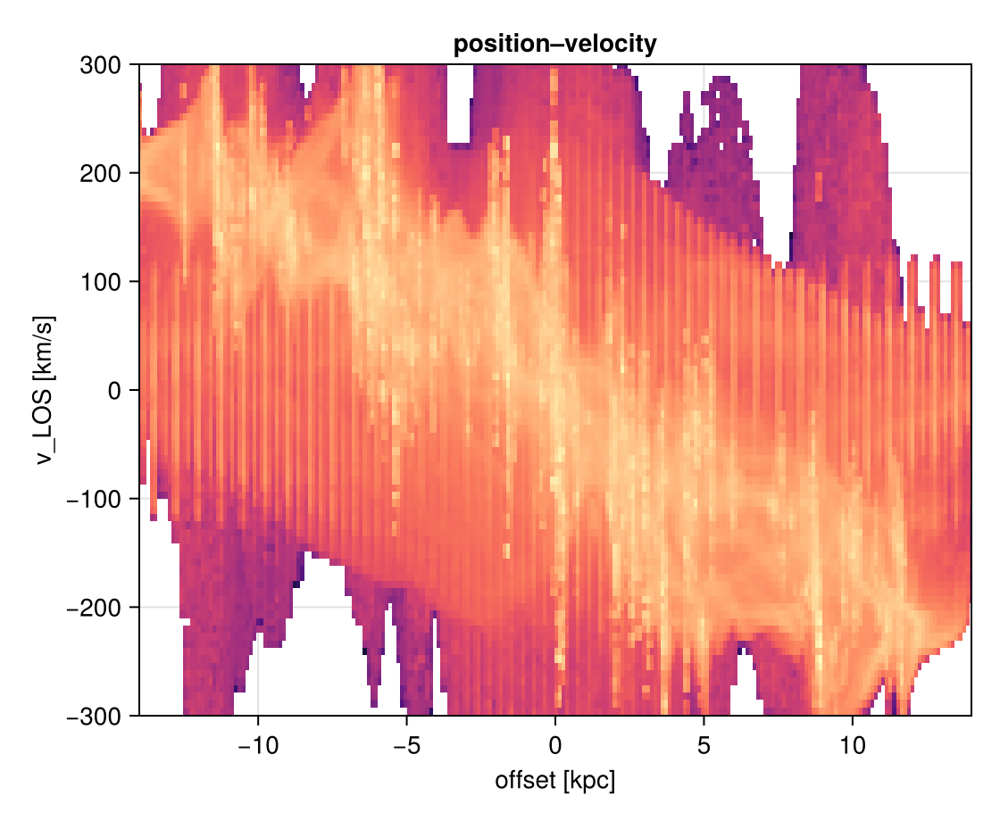
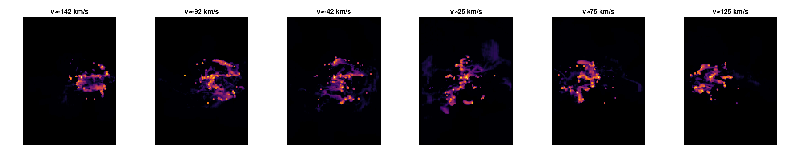
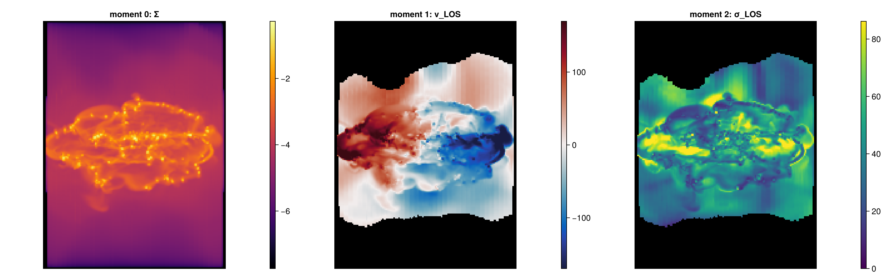
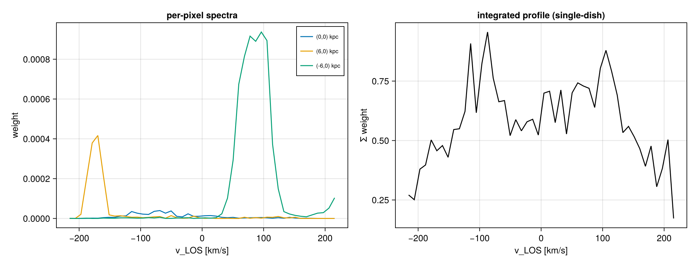
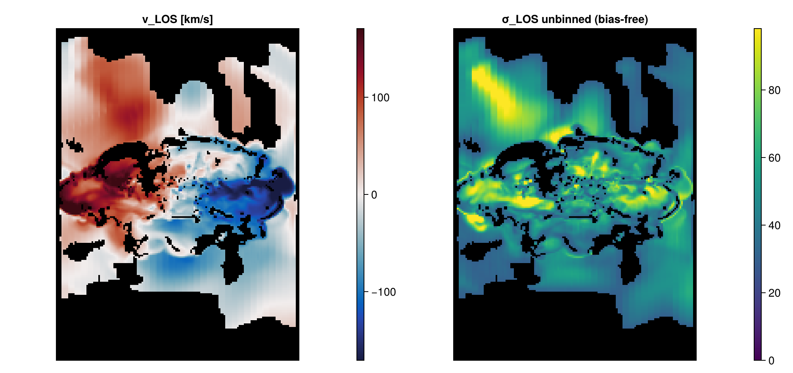
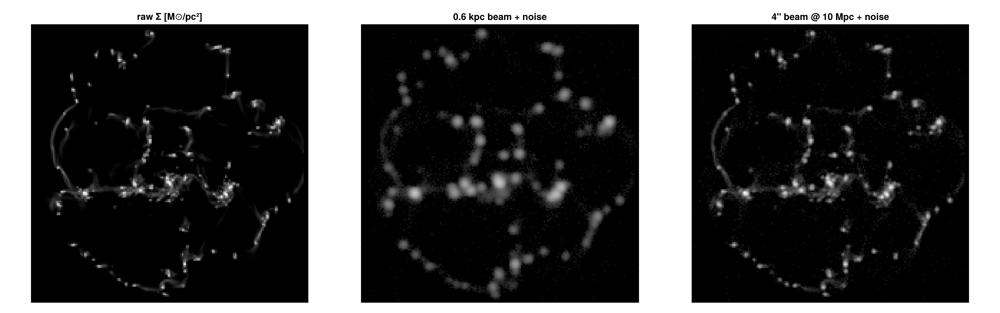

Line-of-sight cubes, kinematics & mock observations
This page is generated from the runnable notebook 12_multi_LosCubes.ipynb — every figure below comes from executing it on a real RAMSES AMR run (spiral_clumps).
A projection collapses each line of sight (LOS) to one weighted number per pixel. A LOS cube keeps the whole sightline: it bins the cells along the LOS into a position–position– velocity (PPV) cube (or position–position–quantity), exactly what a spectral-line data cube is. From it you get velocity fields, dispersion maps, position–velocity diagrams, per-pixel spectra and mock observations — all at any inclination/position-angle, on AMR data, mass-conserving.
The kinematic demos use a resolved star-forming disk (manu_sim_sf_L14); the AMR binning ladder below uses the clumpy spiral_clumps run (coarse cells make the deposition differences visible).
using Mera, CairoMakie, Statistics
info = getinfo(400, "/path/to/manu_sim_sf_L14")
gas = gethydro(info; lmax=11, xrange=[-0.3,0.3], yrange=[-0.3,0.3], zrange=[-0.3,0.3], center=[:bc]) # central diskReal simulation data is not a textbook galaxy: a few hot/diffuse cells carry extreme velocities, and the faint outskirts are noisy. The kinematic figures below therefore follow standard practice — mask by surface density (only show where there is real gas) and clip the colour scale to a robust percentile (e.g. quantile(abs.(v), 0.98)), not the raw extremum. The runnable notebook defines a small show_map!/maskby helper for this.
AMR deposition quality — the binning knob
Off-axis/LOS rendering rotates each AMR cell into the camera plane and deposits its footprint. How that footprint is laid down is the binning kwarg, and it matters most where coarse and fine cells meet. The ladder below is the same zoomed edge-on view at a pixel finer than the coarse cells:
clumps = gethydro(getinfo(100, "/path/to/spiral_clumps")) # an AMR run with coarse cells
for b in (:ngp, :cic, :overlap, :exact)
projection(clumps, :sd, :Msol_pc2; direction=:edgeon, center=[:bc],
xrange=[-8,8], yrange=[-8,8], range_unit=:kpc, pxsize=[0.12,:kpc], binning=b)
end
:ngp/:cic— fast previews; they deposit a coarse cell near its centre, leaving a sparse speckle with holes between cells (the "AMR not overlapping" artefact).:overlap(the default) — per-cell footprint supersampling; coarse cells that exceed thenmaxcap now deposit a footprint-sized top-hat so the sub-cells tile the camera plane with no gaps, hole-free at any view angle, while fine cells keep the sharp ±1px deposit. Mass-conserving.:exact— analytic per-cell footprint integral; the fidelity reference (slower, no cap).
All four conserve total mass (Σ pixel == msum); only the spatial coverage differs. Use the default :overlap; reach for :exact when you want the analytic reference.
Velocity field & dispersion — :vlos / :σlos
The two basic kinematic observables, mass-weighted, at any orientation:
pv = projection(gas, :vlos, :km_s; direction=:edgeon, center=[:bc], binning=:overlap, range_unit=:kpc, pxsize=[0.3,:kpc])
ps = projection(gas, :σlos, :km_s; direction=:edgeon, center=[:bc], binning=:overlap, range_unit=:kpc, pxsize=[0.3,:kpc])
(Tip: a few hot/diffuse cells can carry extreme velocities, so clip the colour scale to a robust percentile — e.g. quantile(abs.(v), 0.98) — rather than the raw extremum.)
Position–velocity diagram — position_velocity
The classic long-slit / rotation-curve diagnostic — a 2-D histogram of (in-plane offset, v_LOS):
pvd = position_velocity(gas; direction=:edgeon, center=[:bc], range_unit=:kpc,
offset_unit=:kpc, v_unit=:km_s, nbins=200)
heatmap(pvd.offset, pvd.velocity, log10.(pvd.pv))
The PPV cube & channel maps — velocity_cube
The cube is the parent of the PV and moment maps: each velocity channel lights up the gas moving at that LOS velocity. Set vrange to the physical line so the channels span the rotation:
vc = velocity_cube(gas; direction=:edgeon, center=[:bc], binning=:overlap, vrange=[-250,250],
xrange=[-12,12], yrange=[-12,12], range_unit=:kpc, pxsize=[0.3,:kpc], nv=80)
ext = getextent(vc, :kpc) # physical sky extent of the cube
Moment maps — velocity_moments
velocity_moments(vc) returns the canonical observational triptych — moment 0 (column), moment 1 (v_LOS), moment 2 (σ_LOS) — which reproduce the direct :vlos/:σlos maps:
Σ, vlos, σlos = velocity_moments(vc)
Spectra — getspectrum & integrated_spectrum
Pull the line profile of any sightline, or the disc-integrated single-dish profile:
v, I = getspectrum(vc; x=5, y=0, range_unit=:kpc) # one pixel's spectrum
vc_, Ig = integrated_spectrum(vc) # global double-horn profile
Any quantity, and a bias-free dispersion
los_cube bins any field along the LOS (a per-sightline PDF of T, cs, …), and los_component takes the LOS projection of any 3-vector ((:vx,:vy,:vz), (:ax,:ay,:az), (:bx,:by,:bz)). Its dispersion=true map is the unbinned σ — free of the channel-width (Sheppard) bias a cube carries:
tc = los_cube(gas; quantity=:T, q_unit=:K, direction=:faceon, center=[:bc], binning=:overlap, pxsize=[0.4,:kpc], nbins=50)
Σt, meanT, dispT = los_moments(tc)
N = column_integral(gas, :rho; direction=:faceon, center=[:bc], pxsize=[0.4,:kpc], binning=:exact) # true ∫ρ dl
vmap = los_component(gas, (:vx,:vy,:vz); direction=:edgeon, center=[:bc], unit=:km_s, pxsize=[0.3,:kpc])
σmap = los_component(gas, (:vx,:vy,:vz); dispersion=true, direction=:edgeon, center=[:bc], unit=:km_s, pxsize=[0.3,:kpc])
Mock observation — beam + noise
Turn a map into a realistic image: convolve with a beam (physical, or angular at a distance) and add noise:
m = projection(gas, :sd, :Msol_pc2; direction=:faceon, center=[:bc], pxsize=[0.25,:kpc])
obsP = mock_observe(m, :sd; beam_fwhm=0.8, beam_unit=:kpc, noise=maximum(m.maps[:sd])*3e-3, rng=MersenneTwister(1))
obsA = mock_observe(m, :sd; beam_fwhm=6.0, beam_unit=:arcsec, distance=10.0, distance_unit=:Mpc,
noise=maximum(m.maps[:sd])*3e-3, rng=MersenneTwister(1)) # 6″ beam for a source at 10 Mpc
Save, reload & export
savecube(vc, "mycube"); vc2 = loadcube("mycube.jld2") # full round-trip (provenance preserved)
# using FITSIO; savefits(vc, "mycube.fits") # WCS + spectral axis → DS9/CASA/CARTASee also
projection,position_velocity,velocity_cube,los_cube,los_component,velocity_moments,getspectrum,integrated_spectrum,column_integral,mock_observe,getextent— the LOS-cube API.- Off-axis projection — the camera/orientation conventions these share.